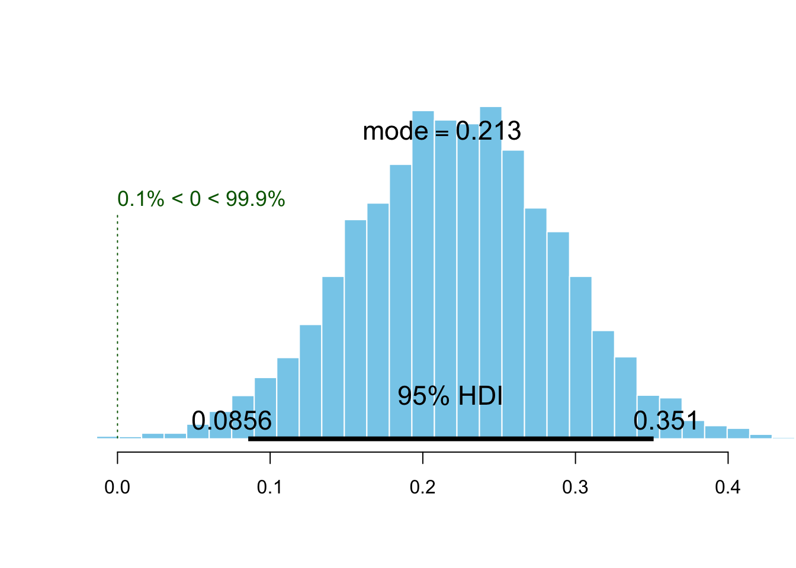
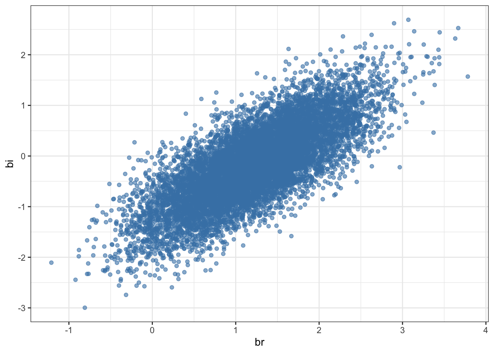

(data <- read.csv("http://raw.githubusercontent.com/lnalborczyk/old_blog/master/_posts/absenteeism/absence.csv", stringsAsFactors = FALSE) )One of the greatest aspect of being a PhD student in experimental psychology is to have the immeasurable pleasure to carry experiments with human subjects. Sure, it comes with a few disagreements, like having to teach undergraduate students how to use online schedule appointers (e.g., doodle), or spending a few hours per day answering clumsy e-mails asking for the location of the experimental room… and last but not least, being in a constant state of ignorance about the presence or the absence of the so-much expected student-guinea-pig.
After many speculative and fruitless conversations about the rate of students’ participation to psychological studies, I have finally decided to make use of the data harvested along my PhD studies to answer the ultimate question: can we predict the participation of students?
Which strategy?
On a practical ground, I have took advantage of the fact that a friend and I had to recruit participants for some studies of our PhD. We then simply started to systematically write down which participants did or did not come to their appointment, as well as information about their participation, like the mode of recruitment (online versus IRL registration), the fact that we sent a reminder e-mail (or not), and the day of the week. To sum up, the basic question was to know whether we can estimate the probability that a registered participant will come to its appointment, based on the information we collected.
What is a logistic regression?
Logistic regression (also called a logit model) is used to model binary outcome variables (e.g., “absent” versus “present”), using the general regression framework.
In the logit model, the log-odds of the outcome \(p_{i}\) are modelled as a linear combination of the predictor variables:
\[logit(p_{i}) = log\Big(\frac{p_{i}}{1-p_{i}}\Big)= \alpha + \beta _{1} x_{1} + \cdots + \beta _{n} x_{n}\]
Thus, although the observed dependent variable is a dichotomic variable, the logistic regression estimates the log-odds, as a continuous variable, that the dependent variable is in one state or the other.
To clarify the mechanism of the logit model, we will go through a first simple example, trying to estimate the overall probability of participants being present.
Step 1: Getting the data
Data can be retrieved directly from GitHub with:
day inscription reminder absence presence total
1 Friday doodle no 7 11 18
2 Friday doodle yes 0 2 2
3 Friday panel yes 0 10 10
4 Monday doodle no 5 4 9
5 Monday doodle yes 2 6 8
6 Monday panel yes 6 12 18
7 Thursday doodle no 3 11 14
8 Tuesday doodle no 4 10 14
9 Tuesday doodle yes 1 7 8
10 Tuesday panel yes 0 9 9
11 Wednesday doodle no 6 11 17
12 Wednesday doodle yes 0 4 4
13 Wednesday panel yes 0 14 14The inscription column describes the mode of inscription of students (i.e., whether they registered for the experiment online, or IRL) while the reminder column indicates whether a reminder e-mail was sent to the participant prior to the experiment. The three last columns represent counts of present, absent, and total number of participants, respectively, for a grand total of 145 participants.
Step 2: Writing down a first model
The first step of every Bayesian analysis (oops, did I mention that this post will be Bayesian?) is to specify the full probability model. It starts with describing the data-generating process from which the data is issued (i.e., the likelihood). In our case, observations \(y_{i}\) are distributed according to a Binomial distribution:
\[y_{i} \sim \mathrm{Binomial}(n_{i}, p_{i})\]
where \(y_{i}\) is a count, \(p_{i}\) is the probability of any particular “trial” and \(n_{i}\) is the total number of observations. Our aim will be to predict the probability \(p_{i}\) of each trial \(i\).
With this first model, we want to estimate the mean probability of tha participant being present. We can model this situation by an intercept-only model, as following:
\[ \begin{aligned} y_{i} &\sim \mathrm{Binomial}(n_{i}, p_{i})\\ logit(p_{i}) &= \alpha\\ \alpha &\sim \mathrm{Normal}(0, 10)\\ \end{aligned} \]
In this model, we state that the log-odds (or the logit) of \(p_{i}\) are given by a single parameter \(\alpha\), the intercept, on which we assign a very vague prior (note that this prior is expressed in the log-odds space, and not directly in the space of the outcome).
Step 3: Fitting the model with rethinking
Throughout this post, we will use the rethinking package, as it allows to fit a model using almost the same syntax as the mathematical one. For instance, the model we described above would look like:
library(rethinking)
library(tidyverse)
library(BEST)
mod1 <-
rethinking::map(
alist(
presence <- dbinom(total, p),
logit(p) <- a,
a ~ dnorm(0, 10) ),
data = data) The two first lines state that we fit the model using the map function, which requires a model expressed as an alist object (i.e., a non-evaluated list object). The three next lines describe the model very similarly to the mathematical description.
A brief summary of the model can be obtained using the precis function.
precis(mod1, prob = 0.95) mean sd 2.5% 97.5%
a 1.182719 0.1959511 0.7986619 1.566776which gives the mode of the posterior distribution for the intercept \(\alpha\) along with the standard deviation of the distribution as well as the credible intervals. The intercept represents the estimated log-odds of being present, which can be translated back to the overall probability of being present, as we know that:
\[p = \exp(\alpha) / (1 + \exp(\alpha) )\]
exp(coef(mod1)) / (1 + exp(coef(mod1) ) ) a
0.7654363 which is equivalent to using the plogis function:
plogis(coef(mod1) ) a
0.7654363 So we already know that there is an estimated 0.77 probability that a registered participant will come to his appointment…and if the intercept represents the log-odds of being present, a simple exponential transformation allows to get back to odds:
exp(coef(mod1) ) # odds of presence a
3.263235 which can be interpreted directly by saying that the odds of a registered participant being present are of 3.26 (or 3.26:1)1.
Step 4: Adding predictors
Nice, but we said that the logistic regression allows to map a relationship between a binary outcome variable and a linear combination of predictor variables, so let’s add predictors.
Effects of the reminder
For instance, we might be interested in knowing whether sending a reminder e-mail has an impact on the presence. We first start by dummy-coding our predictors.
data <-
data %>%
mutate(
reminder = ifelse(reminder == "no", 0, 1),
inscription = ifelse(inscription == "panel", 0, 1) )The model that map the outcome and the effects of the reminder can be expressed as follows:
\[ \begin{aligned} y_{i} &\sim \mathrm{Binomial}(n_{i}, p_{i}) \\ logit(p_{i}) &= \alpha + \beta \times \text{reminder} \\ \alpha &\sim \mathrm{Normal}(0, 10) \\ \beta &\sim \mathrm{Normal}(0, 10) \\ \end{aligned} \]
where the effects of the reminder on the log-odds of being present are realised through the slope \(\beta\), which is also assigned a very vague prior. This model is fitted with rethinking using a very similar syntax to previously:
mod2 <-
rethinking::map(
alist(
presence <- dbinom(total, p),
logit(p) <- a + b * reminder,
a ~ dnorm(0, 10),
b ~ dnorm(0, 10) ),
data = data)First, we might want to compare the efficiency of these two models. The compare function allows to compare models fit on the same data using the Wattanabe Akaike Information Criterion (WAIC; Watanabe, 2010), a generalisation of the AIC, previously discussed on this blog here. This criterion can be seen as an approximation of the out-of-sample deviance, and in simple words, of the predictive abilities of the model (McElreath, 2016).
compare(mod1, mod2) # yeah, model 2 wins WAIC SE dWAIC dSE pWAIC weight
mod2 48.33272 8.926933 0.000000 NA 3.534778 0.97616377
mod1 55.75756 7.308822 7.424847 9.667886 1.942421 0.02383623This comparison reveals that the second model is better in the sense of the WAIC (as for the deviance, the lower is the better), and that the parameter we added (i.e., the slope \(\beta\)) improved the predictive abilities of the model.
By adding a slope in the model, the intercept now represents the log-odds for the no-reminder condition (as it was coded as 0), while the coefficient for reminder represents the log odds-ratio between the reminder and the no-reminder groups. We can then obtain the odds-ratio by simply exponentiating the slope:
exp(coef(mod2)[2]) # odds ratio between no-reminder and reminder b
3.774536 which can be read as a propotionnal increase of 3.77 in the odds of being present when a reminder is sent. We also might be interested in the absolute change in probability, rather than the odds ratio. To answer this question, we first extract the samples from the posterior distribution estimated by this second model and store it in post1.
post1 <- extract.samples(mod2) # extracting posterior samplesThen, from these posterior samples, we can compute almost all statistics of interest. For instance we can compute the probability of being present according to the reminder status.
p.no <- plogis(post1$a) # mean probability of presence when no reminder
p.yes <- plogis(post1$a + post1$b) # mean probability of presence when reminder
plotPost(p.yes - p.no, compVal = 0, showMode = TRUE, xlab = "") 
This histogram depicts the posterior distribution of the difference of probability of being present by comparing the no-reminder and the reminder groups. In other words, it represents an estimation of the effect of the reminder, while the mode of the distribution informs us about the most probable value of increase in probability due to the reminder.
Effects of the mode of inscription
Likewise, we could be interested in the maybe more subtle effects of the mode of inscription on the probability of presence. This model is expressed very similarly as the previous one:
\[ \begin{aligned} y_{i} &\sim \mathrm{Binomial}(n_{i}, p_{i}) \\ logit(p_{i}) &= \alpha + \beta \times \text{inscription} \\ \alpha &\sim \mathrm{Normal}(0, 10) \\ \beta &\sim \mathrm{Normal}(0, 10) \\ \end{aligned} \]
where \(\beta\) now represents the effects of the mode of inscription (i.e., online versus IRL).
mod3 <-
rethinking::map(
alist(
presence <- dbinom(total, p),
logit(p) <- a + b * inscription,
a ~ dnorm(0, 10),
b ~ dnorm(0, 10) ),
data = data)and we compare it to the intercept-only model in the same way as before:
compare(mod1, mod3) # yeah, model 3 wins WAIC SE dWAIC dSE pWAIC weight
mod3 54.26925 9.913801 0.000000 NA 4.898551 0.6515147
mod1 55.52065 7.267908 1.251408 10.70296 1.794424 0.3484853this time again the model comparison tells us that the inclusion of this predictor in the model improves the predictions abilities of the model.
post2 <- extract.samples(mod2)
p.panel <- plogis(post2$a) # mean probability of presence for panel
p.doodle <- plogis(post2$a + post2$b) # mean probability of presence for doodle
plotPost(p.doodle - p.panel, compVal = 0, showMode = TRUE, xlab = "") We obtain an estimation of the effect similar to the effect of the reminder. In other words, the mode of inscription seems to be as much important as the reminder, to predict the presence of participants…
Building the full model: multi-what?
We are now going to buil a last model that includes both reminder and incription as predictors.
\[ \begin{aligned} y_{i} &\sim \mathrm{Binomial}(n_{i}, p_{i}) \\ logit(p_{i}) &= \alpha + \beta_{r} \times \text{reminder} + \beta_{i} \times \text{inscription} \\ \alpha &\sim \mathrm{Normal}(0, 10) \\ \beta_{r} &\sim \mathrm{Normal}(0, 10) \\ \beta_{i} &\sim \mathrm{Normal}(0, 10) \\ \end{aligned} \]
As previously, the rethinking model follows a similar syntax, with the only new thing here is the compact specification of the prior for the two slopes, using c().
mod4 <- rethinking::map(
alist(
presence <- dbinom(total, p),
logit(p) <- a + br * reminder + bi * inscription,
a ~ dnorm(0, 10),
c(br, bi) ~ dnorm(0, 10) ),
data = data)Adding that the output of precis can be directly plotted.
plot(precis(mod4, prob = 0.95) )This figure shows the mean of the posterior distribution of each parameter of the model along with 95% credible intervals. Wait…why inscription does not seem to have an influence anymore? Let’s compare the four models we built to better understand what’s happening here.
compare(mod1, mod2, mod3, mod4) WAIC SE dWAIC dSE pWAIC weight
mod2 48.21541 8.781045 0.000000 NA 3.443579 0.71913505
mod4 50.60255 9.641261 2.387147 1.314572 4.630774 0.21799578
mod3 53.80681 9.754853 5.591401 3.282625 4.667485 0.04391907
mod1 55.48789 7.258086 7.272480 9.580430 1.773878 0.01895010Ok so model 4 performs worse than the others, and the best model seems to be the second model (effet of reminder only). Why inscription does not seem to have an influence anymore, in the full model? Oh yeah… I forgot to tell you that we were two experimenters running experiments and collecting data about absenteeism. I am used to recruit participants only through doodle and this time I was too busy lazy to send a reminder to each participant (and so sometimes I forgot), while my colleague recruited participants through an IRL panel and sent an e-mail reminder to each participant. In other words, it means that the reminder and the inscription variables are almost perfectly counfounded (i.e., “correlated”).
A simple way to realise how problematic is the situation is to draw the contingency table.
data %>% # contingency table
group_by(inscription, reminder) %>%
summarise(n = sum(total) ) %>%
spread(key = reminder, value = n) %>% data.frame inscription X0 X1
1 0 NA 51
2 1 72 22We notice first that the amount of data in each condition is very disproportionnal and that we completely lack data for the condition panel and no reminder.
We generally refer to this situation (when two or more predictors are highly correlated) as multi-collinearity. It basically mean that the two predictor variables carry almost the same information. What the model comparison is telling us is then simply that there is no benefit in adding a second predictor if it brings the same information as the first predictor… makes sense no?
This redudancy can be illustrated by plotting the posterior samples of the two slopes each against the other:
extract.samples(mod4) %>%
ggplot(aes(br, bi) ) +
geom_point(alpha = 0.6, color = "steelblue") +
theme_bw()
All we can say is that there is obviously an influence of at least one of the predictors on the probability of the participants being present, but as they are confounded, we can not tell whether it is an effect of the reminder or an effect of the mode of inscription. However, if I had to guess, I would go for the reminder effect. Otherwise, instead of being writing a blog post, I would be writing a manuscript on the beneficial motivationnal aspects of registering participants IRL compared to registering them via online platforms.
Conclusions
Well, know you now, sending a reminder e-mail probably increases the probability of participants being present, so don’t be busy lazy.
References
Click to expand
McElreath, R. (2016). Statistical Rethinking. Chapman; Hall/CRC.
Watanabe, S. (2010). Asymptotic Equivalence of Bayes Cross Validation and Widely Applicable Information Criterion in Singular Learning Theory. Journal of Machine Learning Research, 11, 3571–3594.
Footnotes
Citation
BibTeX citation:
@online{nalborczyk2017,
author = {Nalborczyk, Ladislas},
title = {Experimental Absenteeism and Logistic Regression - {Part}
{I}},
date = {2017-08-05},
url = {https://lnalborczyk.github.io/blog/2017-08-05-absenteeism1},
langid = {en}
}
For attribution, please cite this work as:
Nalborczyk, L. (2017, August 5). Experimental absenteeism and
logistic regression - Part I. https://lnalborczyk.github.io/blog/2017-08-05-absenteeism1